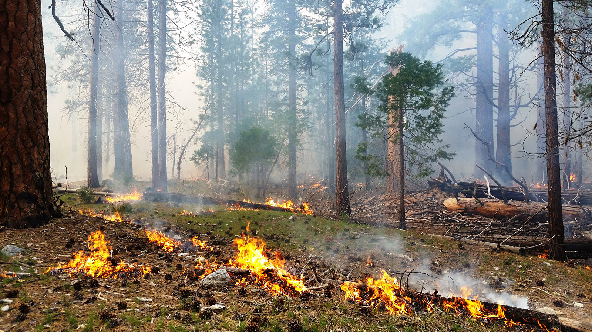

Parks Announce Fall Prescribed Burn Plans

Released:
September 26, 2018
Contact:
Mike Theune, Fire Information Officer, 559-565-3703
SEQUOIA AND KINGS CANYON NATIONAL PARKS, Calif. September 26, 2018 - With the changing of the seasons, the parks are announcing two priority prescribed burns to be completed before the end of the year, as cooler weather and moisture arrives to the area this time of year. One project is planned for each park, the 466-acre Cedar Central Prescribed Burn located in Cedar Grove of Kings Canyon National Park and the 488-acre Sherman Prescribed Burn located in Giant Forest of Sequoia National Park.
As fire activity throughout the state and across the country moderates, Sequoia and Kings Canyon National Parks' fire crews have returned from fires outside the area and are becoming available to support and manage these projects. This work takes a proactive approach to fire and fuels management in the Sierra Nevada.
The prescribed burns are conducted in coordination with the San Joaquin Valley Air Pollution Control District in order to reduce impacts for both communities and the public by finding weather windows with good smoke dispersion. Visitors can learn more about air quality and smoke by visiting either www.airnow.gov or www.valleyair.org.
The parks also look atchanges in visitation patterns in order to reduce the impact within the parks. Generally there is a lull during the fall before the end of the year's holiday season. Campgrounds in both areas are already reducing sites and the Sequoia Shuttle has ended its summer operations. However, while both Cedar Grove and Giant Forest have areas open for day-users, visitors should expect to see limited temporary trail closures due to fire activities.
As the decision is made to which prescribed burn or burns will be conducted and when, a subsequent news release will be sent out with website information on where the public can learn more, see pictures, and get maps. Exact closure locations will be announced when dates for each prescribed burn are released.
If you are visiting the parks, be aware that fire and smoke can be present at any time. A full list of the planned and completed projects can be seen by visiting http://go.nps.gov/sekifireplans. Since the execution of prescribed burns depends on air quality, local fire activity, fuel moisture, and weather, the times and dates listed on the website are estimates only.